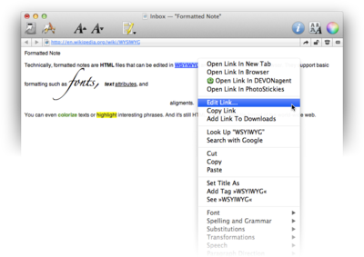

|

Formatted notes allow to write simple formatted text including embedded images that can be viewed on any system with just a web browser. While the range of formatting options is smaller that that of rich text they are much more compatible to today's standards. You can find all available formatting commands in the
Edit
and
Format
menus. By default formatted notes use the font set in
Preferences > Editing
for rich texts and notes.
Technically formatted notes are based on HTML, the language of the world-wide web. Images are embedded directly into the HTML code so that formatted notes are completely self-contained. The HTML code is also cleaned from unnessessary tags and an identifying meta tag is inserted that lets DEVONthink Pro Office distinguish formatted notes from normal HTML pages.
Toolbar & shortcuts
The document windows toolbar is very similar to the one in DEVONthink Pro Office main windows, yet can be configured separately.
Please find a list of shortcuts in the appendix. Read more...
Contextual menu
-
Add Link: Lets you enter a URL and makes the selected text a link to it.
-
Add Tag [word]: Tags the document with the selected word (only available if the word is not already a tag of the document).
-
Edit Link: Edits the destination of a selected link.
-
Highlight: Highlights the selected piece of text with the color you select in the sub-menu.
-
Link To: Makes the selected piece of text a cross-link and links it directly to the group or document you select in the sub-menu.
-
Look Up [word]: Looks the selected text up in Mac OS X's Dictionary.
-
Open Link in Browser: Opens the selected link in your default web browser.
-
Open Link in New Tab: Opens the selected link in a new tab.
-
Remove Link: Makes a selected link simple text.
-
Search selected phrase: Searches for the selected text as a phrase.
-
Search with Google: Opens your default browser and searches for the selected text in Google.
-
See [word]: Opens a drawer with documents related to the selected word.
-
See Related Text: Opens a drawer with documents related to the selected text passage (only available when more than one word is selected).
-
Set Name As: Renames the document according to the selected piece of text (needs to be less than 256 characters).
|